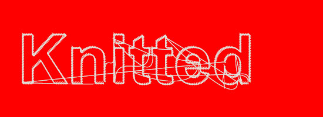

LetterKnitter builds on some interesting PlotDevice functionalities that allow you to control each point in a Bézier spline or font glyph individually. The LetterKnitter stitches and knits letters and words together, with an occasional error in the stitching process.
LetterKnitter uses any font and text you supply it; it is not a new font, but a point filter that works on any typeface (Dolly and Arial in the examples below), and looks different each time you use it as well.



Source code:
var("typeface", TEXT, "Times-Bold") var("text", TEXT, " LetterKnitter") var("size", NUMBER, 100, 10, 200) var("stitches", NUMBER, 700, 10, 1000) def stitch(txt, x, y, n=1000): """ Stitches a given string of text (with n stitches). Creates a text path and finds n points on the path. Connects each consecutive point with a little curve. Sometimes connects to a random point on the path. """ p = textpath(txt, x, y) pt0 = p.point(0) autoclosepath(False) beginpath(pt0.x, pt0.y) for i in range(int(n)): t = float(i) / n pt1 = p.point(t) d = fontsize() * 0.05 curveto( pt0.x, pt1.y, pt1.x + d, pt0.y + d, pt1.x, pt1.y ) if random() > 0.995: pti = p.point(random()) curveto( pt0.x, pt1.y + d*10, pti.x + d, pti.y + d, pti.x, pti.y ) pt0.x = pt1.x pt0.y = pt1.y endpath() nofill() stroke(0.2) strokewidth(1) font(typeface, size) stitch(text, 50, 150, n=stitches)
The path math functions used in LetterKnitter are explained in the tutorial.
Other interesting path filters can be found here.
Created by Tom De Smedt.